Dependency injection
(for five-year olds)
When you go and get things out of the refrigerator for yourself, you can cause problems. You might leave the door open, you might get something Mommy or Daddy don't want you to have. You might even be looking for something we don't even have or which has expired.
What you should be doing is stating a need, "I need something to drink with lunch," and then we will make sure you have something when you sit down to eat something.
John Munsch, 28 October 2009.
Problem
- SET-3009: Stop and keep results in transient
- Simulation results should be kept upon stop
- How can we unit test the stop signal?
Solution
Introduce Dummy Solver

Interface Newton Solver
class NewtonSolverInterface {
public:
virtual void solveNewton(...) = 0;
};
class NewtonSolverTest : public NewtonSolverInterface {
public:
void solveNewton(...) override = {
StopComputation::get().stopComputation();
}
};
Newton Solver Factory
class NewtonSolverFactoryInterface {
public:
virtual std::unique_ptr<NewtonSolverInterface> getSolver() = 0;
};
class NewtonSolverFactoryTest : public NewtonSolverFactoryInterface {
public:
std::unique_ptr<NewtonSolverInterface> getSolver() override {
return std::make_unique<NewtonSolverTest>();
}
};
TaskSteadyState
class TaskSteadyState {
public:
TaskSteadyState(..., NewtonSolverFactoryInterface &factory);
private:
NewtonSolverFactoryInterface &factory_;
};
TaskSteadyState::solveNewton(...) {
std::unique_ptr<NewtonSolverInterface> newtonSolver
= factory_.getSolver();
};
Pros and Cons
- Makes things unit-testable
- Standard pattern
- Boiler plate code
- Introduces virtual functions (confusing)
- Virtual functions might be costly
Virtual function calls